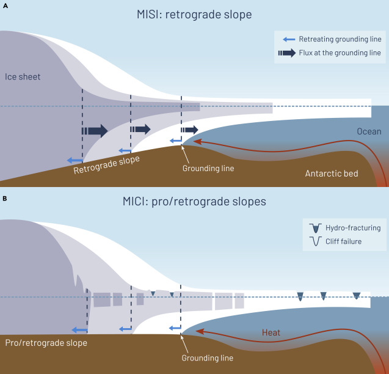

南極氷床の融解 ー 地球上の淡水の70%、氷の90%は、南極の氷
南極大陸を形づくる氷（南極氷床 Antarctic ice sheet）の融解は、主に海水温の上昇によって引き起こされています。特に大西洋由来の暖かい深層水（周極深層水 Circumpolar Deep Water）が南極沿岸で氷河の流れを堰き止めている「棚氷（ice shelf）」の下に流れ込むことで氷を溶かしています。また、地球温暖化により海洋がより多くの熱を吸収し、海水温が上昇すると、氷をさらに溶かすことにつながります。棚氷が薄くなって崩れやすくなると、堰き止められていた氷河がダムが決壊するように急速に海へと流れ出すようになります。
Silvano et al. (2023, Frontiers in Marine Science)
また、大気循環や海氷などの他の要因も南極氷床の融解に関係しています。強い風は棚氷周囲の海氷を岸から遠ざけるため、棚氷をより多くの海洋の熱にさらすことがあります。気温の上昇も、氷の表面からの融解を増加させます。
NASA
南極氷床の融解は、海面上昇や地球気候・海洋生態系に与える潜在的な影響の大きさから、科学者や政策決定者にとって重大な懸念事項です。グリーンランドが全球海面上昇7m分の氷を占めるのに対して、南極は60m分の氷を擁しています。今後100～300年で地球の海面は数メートル上昇し、世界中の低地や沿岸都市に壊滅的な影響をもたらすと予測されています。一方で、海面上昇の将来予測には南極氷床の融解過程に関連した数メートル単位の誤差が含まれているのが現状で、より正確な予測が社会的な要請として求められています。
将来の南極氷床の融解量の誤差を低減し、海面上昇、海洋子午面循環、海洋生態系への潜在的な影響をより正確に評価するために、私たちは研究に取り組んでいます。